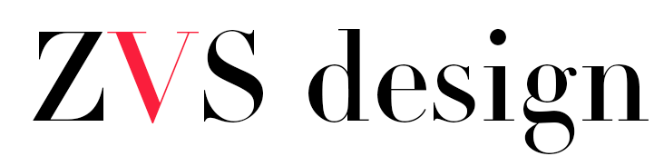
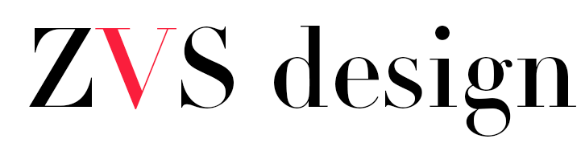

About
Zorica's background is in Architecture, which she finished at the University of Belgrade, Serbia. After working in an academic roll for 4 years, she relocated to Sydney, Australia where she worked for a prestigious urban design office. In 2008, she started her own architectural studio, working mostly on residential design.
Alongside this, Zorica started collecting furniture, decorative objects and art that evolved her passion into its own complementary business. From here, her work became focused on wholistic design– architecture, interior design, and the sourcing of beautiful pieces that add individuality to people's homes.
Zorica further enriched her passion for design by completing an interior design course at the Interior Design Academy in Sydney as well as an architectural photography course at the Australian Centre for Photography.
In 2016, she moved to Brighton, UK with her family, where she re-established her practice.
Our Philosophy
Our studio is fundamentally guided by our clients – ordinary people who share a passion for design and beauty – and the locations we work in, rather than a set style. Though we enjoy mixing architectural finesse with contemporary design and classical splendour, the charm of our projects comes from the way people want to use it. We won't sell you a brand, we will work with you to make it your unique space.
We are a creative studio, where no project is too small, niche or complex – from renovating your existing home, designing extensions and alterations, replacing your bathroom or kitchen to styling a home for sale or rental, providing design direction and sourcing items to create a dream look.
We understand how important the space you live in is – both as a means of expression and communication of what you value, and as a space to live, work, play and feel comfortable in.

 
